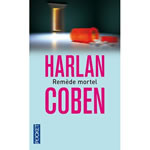

L'hiver du monde
Ken Follet (Robert Laffont - 2012)
 |
Prix conseillé: 36,00€
Prix: 32,00€
Pages: 565
Dans La Chute des géants, cinq familles – américaine, russe, allemande, anglaise et galloise – se sont croisées, aimées et déchirées au rythme de la Première Guerre mondiale et de la Révolution russe. À l’aube des grands bouleversements politiques, sociaux et économiques de la seconde moitié du XXe siècle, ce sont désormais leurs enfants qui ont rendez-vous avec l’Histoire.
Lire la suite
|
Le bruit des choses qui tombent
Juan Gabriel Vasquez (Seuil - 2012)
 |
Prix conseillé: 23,00€
Prix: 20,00€
Pages: 403
Dans la Bogota corrompue et violente des années 90, Antonio Yammara, jeune professeur de droit, se lie d’amitié avec Ricardo Laverde, un homme mystérieux qui le fascine. Un soir, alors qu’ils marchent tous les deux dans la rue, deux hommes à moto tuent Ricardo et blessent gravement Antonio.
Lire la suite
|
Remède mortel
Harlan Coben (Pocket - 2014)
 |
Prix conseillé: 28,00€
Prix: 24,00€
Pages: 706
New-York, fin des années 1980. Le docteur Harvey Riker a peut-être découvert un vaccin contre le sida.
Une formidable avancée qui, cependant, gêne certains intérêts et lobbies. La mort de l'associé d'Harvey et les meurtres sauvages de deux de ses patients pourraient bien être une menace personnelle.
Lire la suite
|